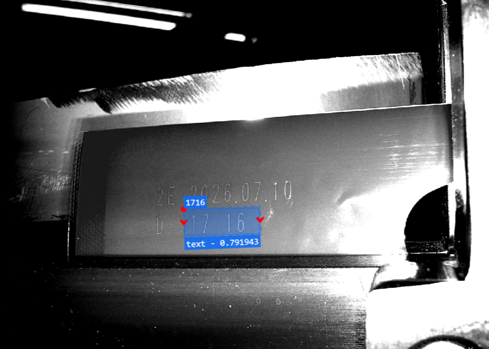
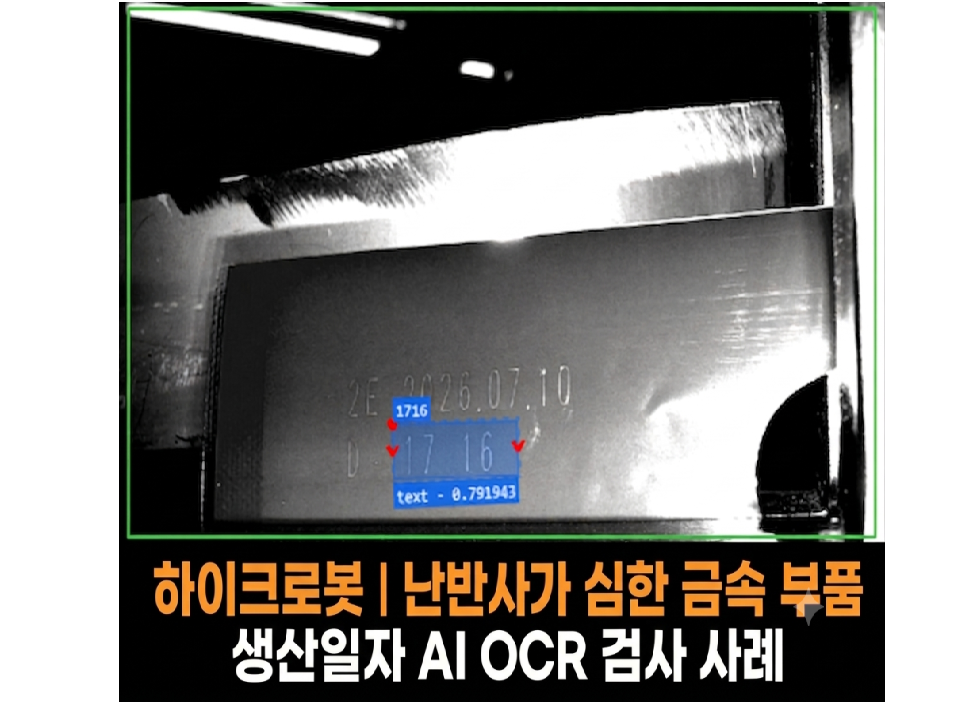
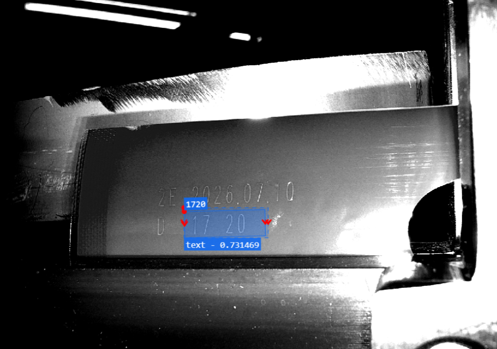
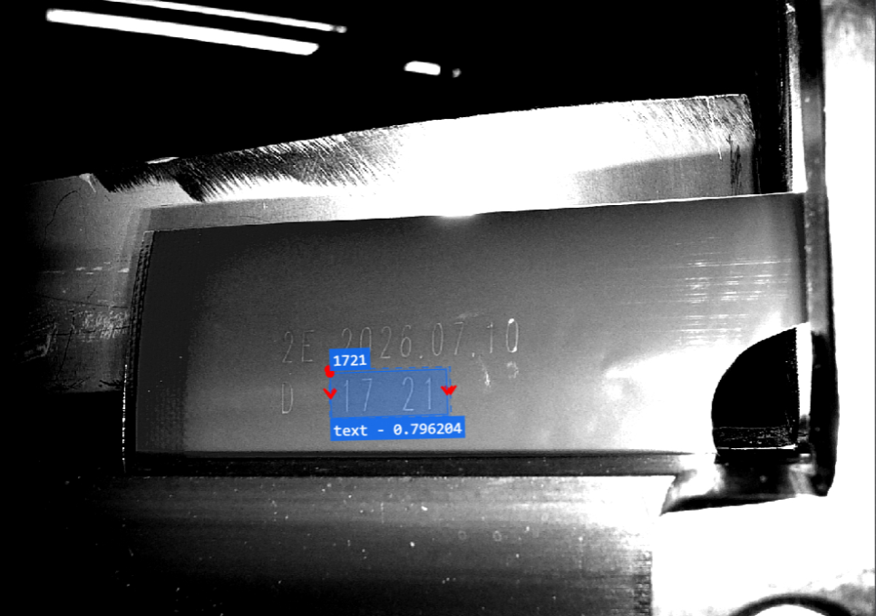
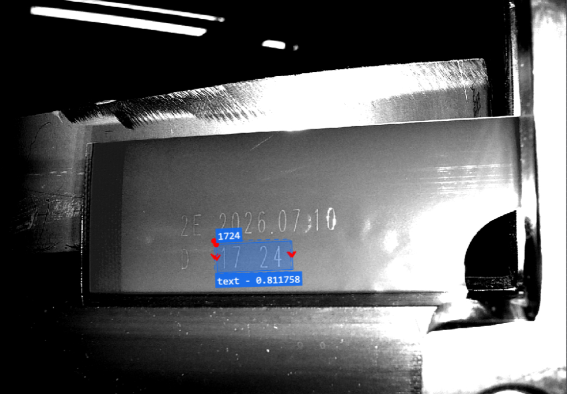
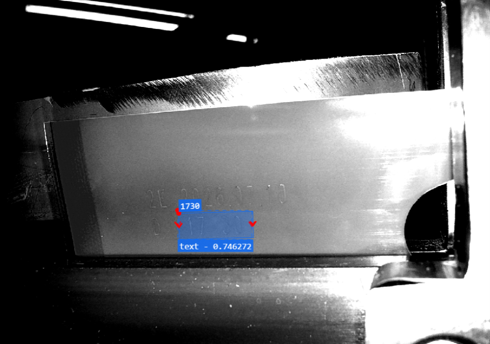
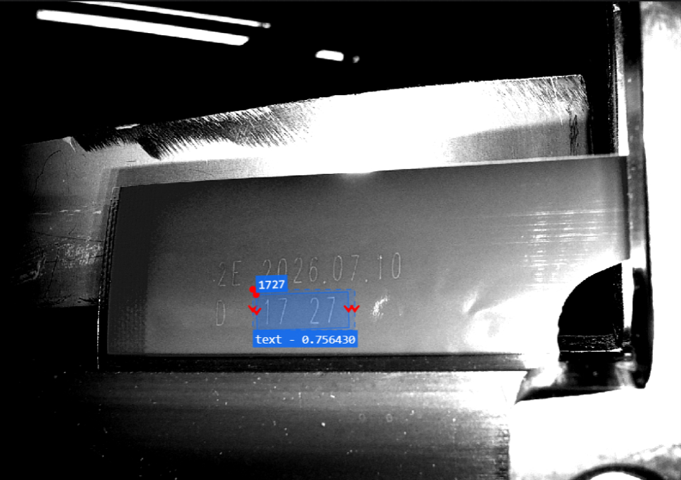
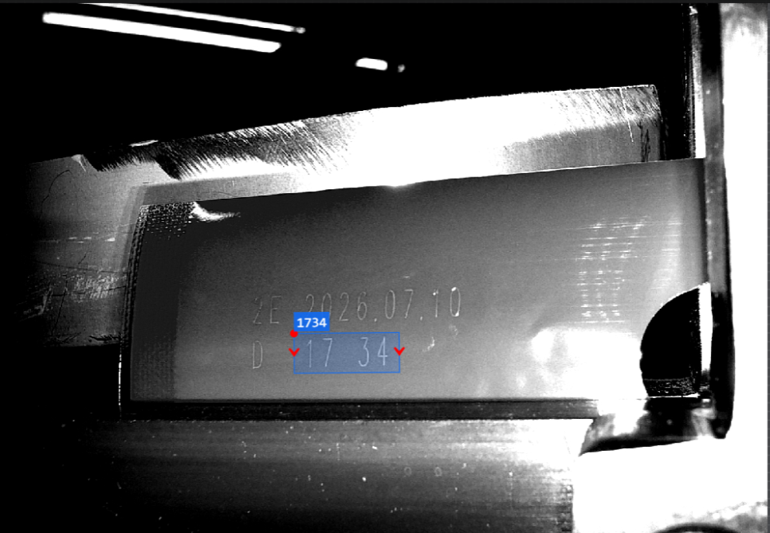
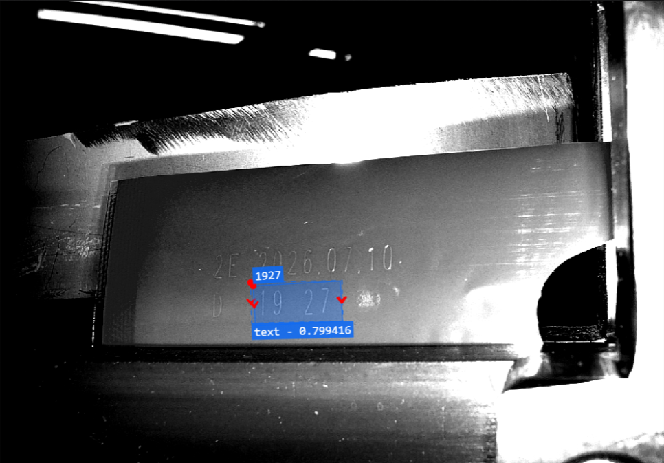

제조 · 금속 부품 · OCR · OCV
난반사 금속 부품 생산일자 AI OCR 시스템 사례
AI 위치 검출 · ROI 보정 · AI OCR
조명을 추가하거나 변경하기 어려운 금속 부품 설비에서 AI로 생산일자 영역을 찾고 OCR ROI를 보정한 사례입니다. 위치 검출·전처리·AI OCR을 조합해 위치와 반사 변화에 대응했습니다.

Project Summary
프로젝트 핵심 구성
- 산업
- 제조 · 금속 부품
- 검사·자동화 대상
- 난반사 금속 부품 생산일자 AI OCR
- 주요 기술
- AI 위치 검출 · ROI 보정 · AI OCR
- 적용 구분
- 프로젝트 사례
Project Photos
실제 구축 현장 및 검사 화면








01 · Overview
프로젝트 개요
조명을 추가하거나 변경하기 어려운 금속 부품 설비에서 AI로 생산일자 영역을 찾고 OCR ROI를 보정한 사례입니다. 위치 검출·전처리·AI OCR을 조합해 위치와 반사 변화에 대응했습니다.
02 · Problem
프로젝트에서 해결해야 했던 문제
조명 변경 불가 / 제품 위치·기울기 변화 / 반사 위치 변화 조건에 대응해야 했습니다.
- 조명 변경 불가
- 제품 위치·기울기 변화
- 반사 위치 변화
03 · System
검사·자동화 시스템 구성
조명을 추가하거나 변경하기 어려운 금속 부품 설비에서 AI로 생산일자 영역을 찾고 OCR ROI를 보정한 사례입니다. 위치 검출·전처리·AI OCR을 조합해 위치와 반사 변화에 대응했습니다.
OCR ROI 자동 보정
AI OCR 판독
04 · Inspection
고객사는 금속 부품에 각인된 생산일자를 자동으로 검사하고자 하였습니다.
처음에는 일반 OCR을 적용하면 충분히 가능할 것으로 예상하였지만 실제 생산라인에서는 예상보다 훨씬 어려운 문제가 발생했습니다.
가장 큰 문제는 금속 표면에서 발생하는 심한 난반사였습니다.
게다가 제품이 컨베이어를 따라 이동하면서
좌우 위치가 조금씩 달라지고
앞뒤 위치도 일정하지 않았으며
제품의 높이와 기울기도 계속 변했습니다.
문제는 제품이 움직일 때마다 난반사의 위치도 함께 변한다는 것이었습니다.
어떤 제품은 생산일자가 선명하게 보였지만,
다음 제품은 같은 위치가 빛에 가려져 문자가 거의 보이지 않았고,
또 다른 제품은 반사가 전혀 다른 위치에서 발생하는 현상이 반복되었습니다.
생산일자를 안정적으로 검사하기에는 매우 까다로운 환경이었습니다.
05 · Inspection
조명을 변경하는 것이 가장 좋은 방법이었습니다.
머신비전 프로젝트에서 이러한 문제는 일반적으로 광학 조건을 개선하여 해결합니다.
조명을 변경하거나,
조명의 각도를 수정하거나,
편광을 적용하는 등 다양한 방법으로 난반사를 줄이면 대부분의 문제는 해결됩니다.
하지만 이번 프로젝트는 달랐습니다.
설비 구조상 새로운 조명을 설치할 공간이 전혀 없었습니다.
기존 설비를 변경할 수도 없었기 때문에 광학 조건을 개선하는 일반적인 방법은 사용할 수 없는 상황이었습니다.
즉,
주어진 촬영 환경 그대로 소프트웨어와 AI만으로 문제를 해결해야 하는 프로젝트였습니다.
가장 어려웠던 점은 난반사가 아니라 '계속 변하는 난반사'였습니다.
06 · Inspection
난반사가 심한 프로젝트는 머신비전에서 흔히 접할 수 있습니다.
하지만 난반사가 항상 같은 위치에서 발생한다면 비교적 해결하기 어렵지 않습니다.
이미지 전처리나 광학 보정을 통해 충분히 대응할 수 있기 때문입니다.
이번 프로젝트는 제품이 공급될 때마다 위치가 계속 달라졌습니다.
제품이 조금만 움직여도 난반사의 위치도 함께 바뀌었고,
생산일자가 있는 영역도 계속 이동했습니다.
결국 OCR이 수행해야 하는 위치 자체가 매번 달라지는 환경이었습니다.
이러한 조건에서는 일반 OCR만으로는 안정적인 검사가 거의 불가능했습니다.
ASPEC의 해결 방법
07 · Inspection
이번 프로젝트에서는 OCR을 바로 수행하지 않았습니다.
먼저 AI를 이용하여 생산일자가 인쇄된 영역을 찾도록 구성하였습니다.
AI 위치 검출 모델을 학습하여
제품 위치가 조금씩 달라져도 생산일자가 있는 영역을 먼저 정확하게 찾도록 구현하였습니다.
AI가 생산일자의 위치를 찾으면
그 위치를 기준으로 OCR ROI를 자동으로 이동시키도록 소프트웨어를 개발하였습니다.
즉,
① AI 위치 검출
↓
② OCR ROI 자동 보정
↓
③ AI OCR 수행
이라는 3단계 검사 구조를 적용하였습니다.
이를 통해 제품 위치가 변하더라도 항상 동일한 기준에서 OCR을 수행할 수 있도록 구현하였습니다.
08 · Inspection
AI OCR도 충분한 학습이 중요합니다.
AI OCR은 일반 OCR보다 다양한 글꼴과 인쇄 상태에 강한 성능을 제공합니다.
하지만 AI라고 해서 모든 문자를 자동으로 인식하는 것은 아닙니다.
생산라인에서 실제 사용되는
숫자
문자
날짜 형식
각인 품질
등을 충분히 학습해야 안정적인 인식률을 확보할 수 있습니다.
이번 프로젝트에서도 실제 생산 데이터를 기반으로 AI OCR을 충분히 학습시켜 다양한 조건에서도 안정적으로 생산일자를 인식할 수 있도록 구축하였습니다.
광학과 AI, 그리고 소프트웨어가 함께 만든 결과
09 · Inspection
이번 프로젝트는 단순히 AI OCR 기능만 적용해서 해결한 사례가 아닙니다.
조명을 변경할 수 없는 환경에서
AI 위치 검출
OCR ROI 자동 보정
AI OCR
이미지 전처리
소프트웨어 튜닝
을 함께 적용하여 안정적인 검사 시스템을 구축하였습니다.
머신비전 프로젝트는 하나의 기술만으로 해결되는 경우보다 여러 기술이 함께 조화를 이루어야 성공할 수 있다는 것을 보여주는 대표적인 사례였습니다.
10 · Inspection
이번 프로젝트를 통해 고객이 얻은 효과
이번 시스템 구축으로 고객사는 다음과 같은 효과를 얻을 수 있었습니다.
✔ 생산일자 자동 OCR 검사
✔ 제품 위치 변화 자동 보정
✔ AI 기반 생산일자 위치 검출
✔ 난반사가 심한 환경에서도 안정적인 문자 인식
✔ 작업자의 육안 검사 최소화
✔ 휴먼에러 감소
✔ 다양한 제품 안정적 대응
✔ 생산성 향상
✔ 검사 신뢰성 향상
✔ AI와 소프트웨어를 활용한 안정적인 머신비전 구축
11 · Inspection
ASPEC의 생각
많은 분들이 AI OCR을 적용하면 어떤 환경에서도 문자를 쉽게 읽을 수 있다고 생각합니다.
하지만 실제 머신비전 프로젝트에서는 AI보다 먼저 광학 조건이 중요하며, 광학 조건을 개선할 수 없는 환경에서는 소프트웨어와 AI를 어떻게 조합하느냐가 검사 성능을 결정하는 경우도 많습니다.
이번 프로젝트는 조명을 변경하거나 추가 설치할 수 없는 제한된 환경에서 AI 위치 검출과 AI OCR, 그리고 소프트웨어 기술을 결합하여 문제를 해결한 사례였습니다.
ASPEC은 단순히 OCR 기능만 제공하는 것이 아니라 광학 설계, AI 비전검사, 소프트웨어 개발까지 고객의 생산 환경에 맞는 최적의 머신비전 시스템을 구축하고 있습니다.
Operation
현장 적용과 운영 조건
조명을 추가하거나 변경하기 어려운 금속 부품 설비에서 AI로 생산일자 영역을 찾고 OCR ROI를 보정한 사례입니다. 위치 검출·전처리·AI OCR을 조합해 위치와 반사 변화에 대응했습니다.
- 조명 변경 불가
- 제품 위치·기울기 변화
- 반사 위치 변화
Result
적용 효과
- 생산일자 자동 OCR 검사
- 제품 위치 변화 자동 보정
- AI 기반 생산일자 위치 검출
- 난반사가 심한 환경에서도 안정적인 문자 인식
- 작업자의 육안 검사 최소화
- 휴먼에러 감소
- 다양한 제품 안정적 대응
- 생산성 향상
- 검사 신뢰성 향상
- AI와 소프트웨어를 활용한 안정적인 머신비전 구축
Engineering
ASPEC의 머신비전 시스템 설계 방식
검사 대상의 재질과 형상, 설치 공간과 생산 조건에 맞춰 장비·광학·소프트웨어와 설비 연동을 함께 검토합니다.
- 조명 변경 불가
- 제품 위치·기울기 변화
- 반사 위치 변화
08 · Related Cases
관련 구축사례
비슷한 공정의 자동화를 검토하고 계신가요?
검사 대상과 불량 샘플, 설치 공간, 택타임을 알려주시면 적용 구성을 검토해 드립니다.